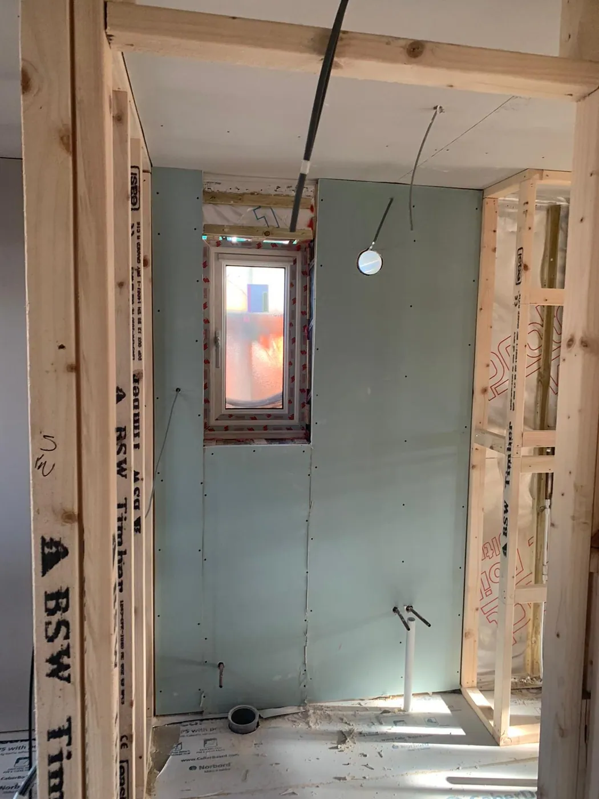

Bathroom builds in Bournemouth, Poole & Christchurch
The building side of a new bathroom, from stud walls and boxing to moisture-resistant boarding ready for tiling.
What we do
We carry out the building work behind new and refurbished bathrooms and en-suites: forming the room, boxing in pipework and boarding walls and ceilings with moisture-resistant board, ready for your tiler and plumber or as part of a wider job.
- New en-suites and small bathroom builds
- Stud walls and pipe boxing
- Moisture-resistant boarding
- Taping, jointing and ceiling work
- Making good after old bathrooms are stripped out
Get a quote
Send a few details and photos and we’ll come back with a clear next step.
Request a Quote Message on WhatsApp Call 07843 969254What to send us
Send photos of the current room, its approximate size and what you would like the new layout to be. Tell us whether a plumber and tiler are already arranged, so we can quote just the building work or plan around them.
We cover Bournemouth · Poole · Christchurch · Ferndown · Wimborne · Broadstone and nearby areas. Include your postcode so we can confirm availability.
Send your project details
Questions about this service
Do you do the plumbing and tiling?
Our work covers the building and boarding side. Tell us whether you already have a plumber and tiler, and we can plan the job around them.
Can you create an en-suite from part of a bedroom?
Often, yes. New stud walls, a door and boarding can form an en-suite, subject to drainage and the layout. Photos and room sizes help us give an initial view.
Related work
Stud Walls & Partitions · Plasterboarding & Dry Lining · General Building